← Back to supported mods
Parts
Large Structural Capola

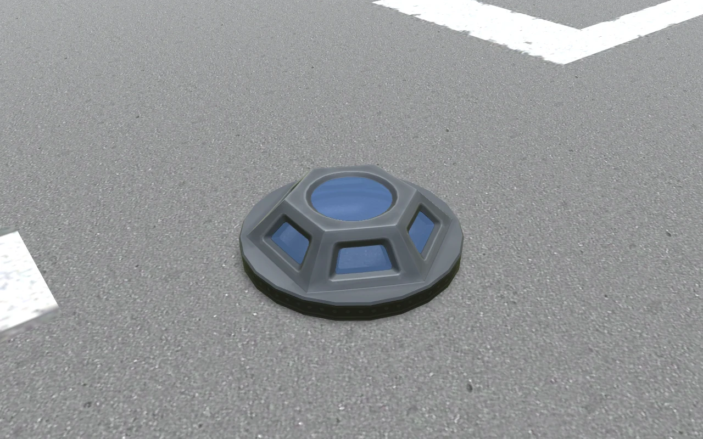
Large Structural Viewselage
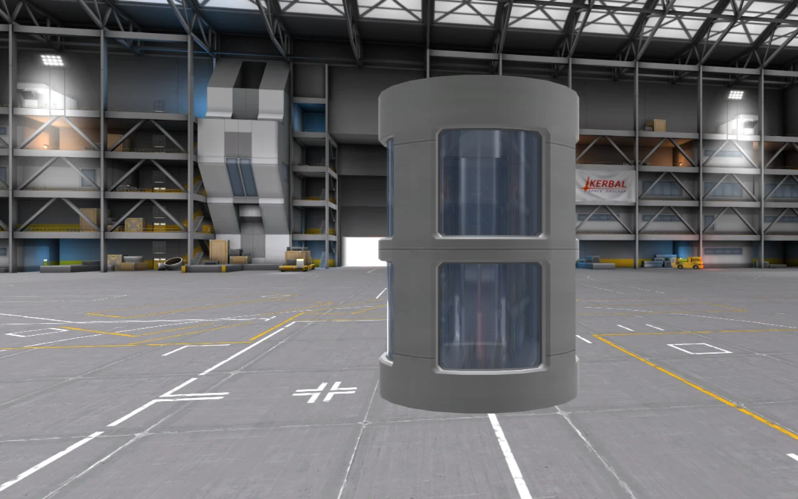

Large Structural Viewselage (Half Length)
Large Tunnel Adapter
Large Tunnel Adapter (Double Length)

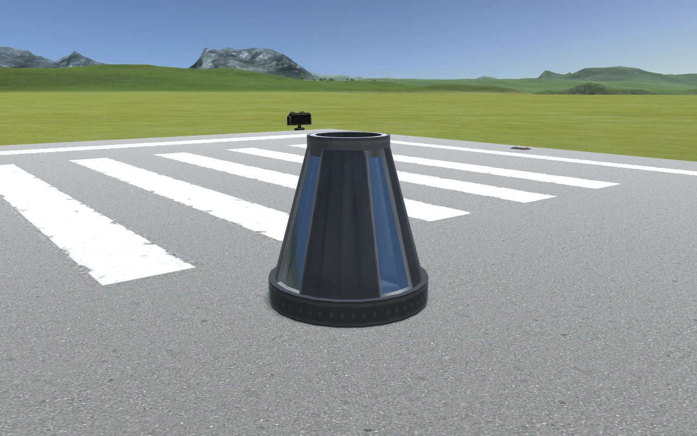
Medium Capola
Medium Structural Viewselage
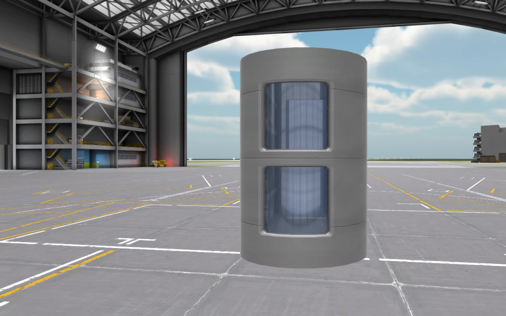

Medium Structural Viewselage (Half Length)
Mini-Capola
Structural Capola
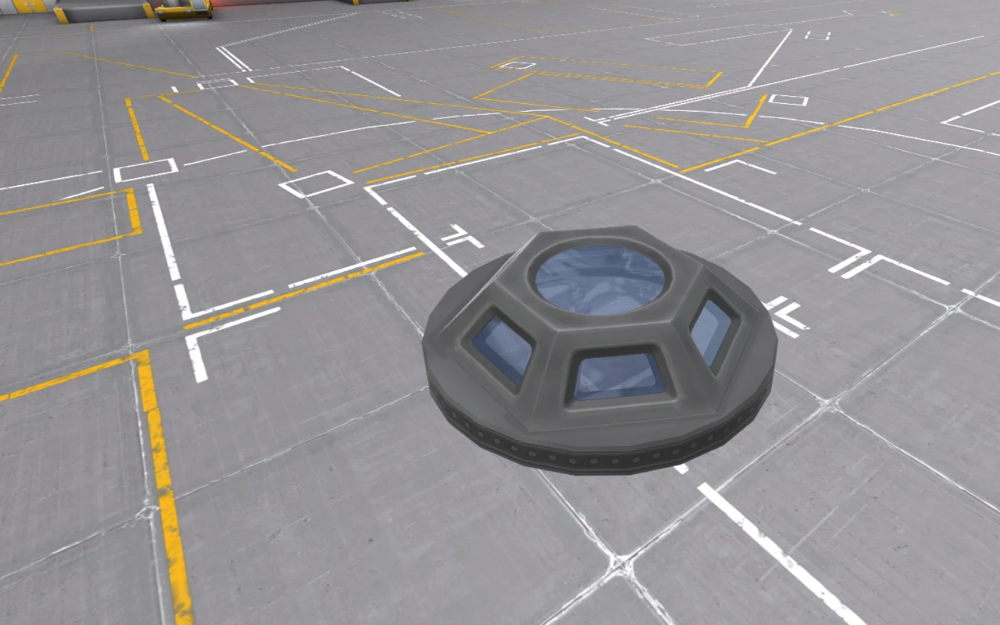

Structural Viewselage
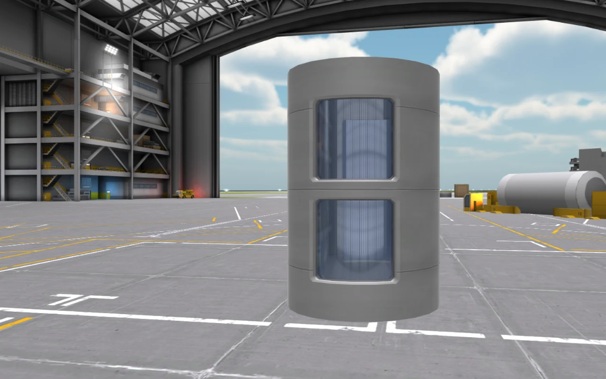
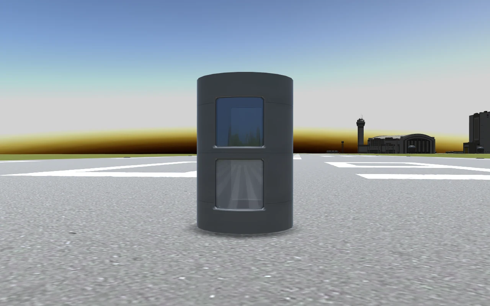
Structural Viewselage (Half Length)
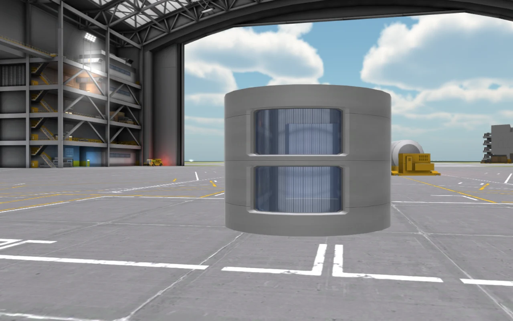
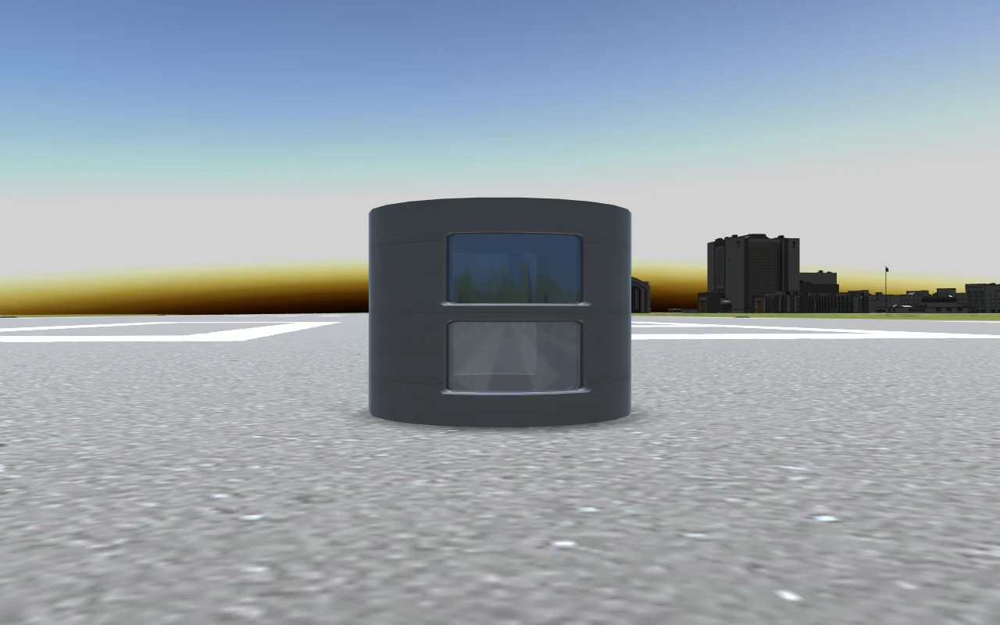
Tunnel Adapter

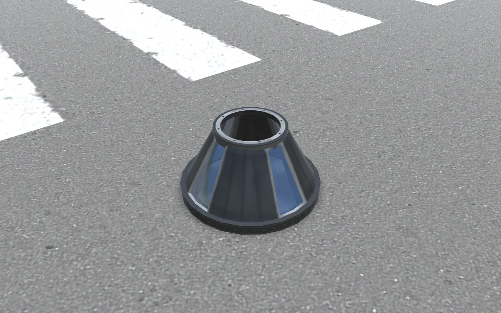
Tunnel Adapter (Double Length)
X-Large Structural Viewselage
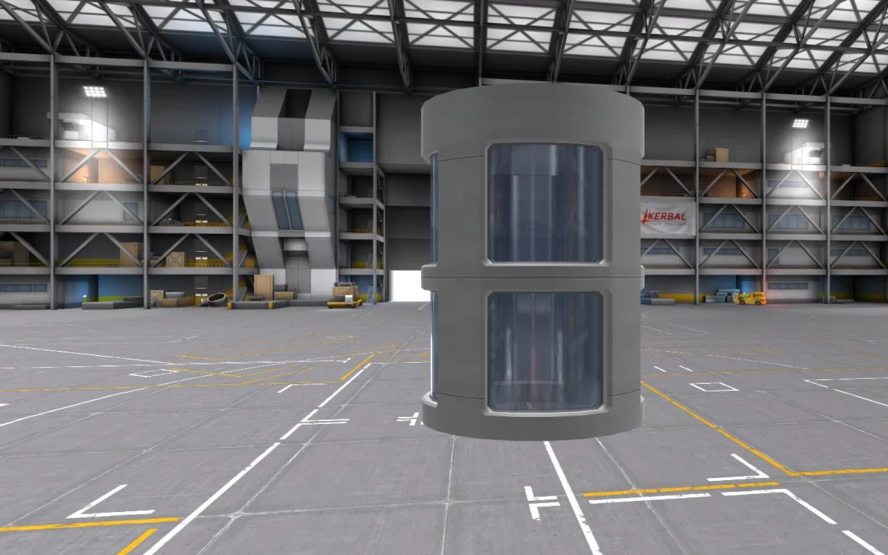
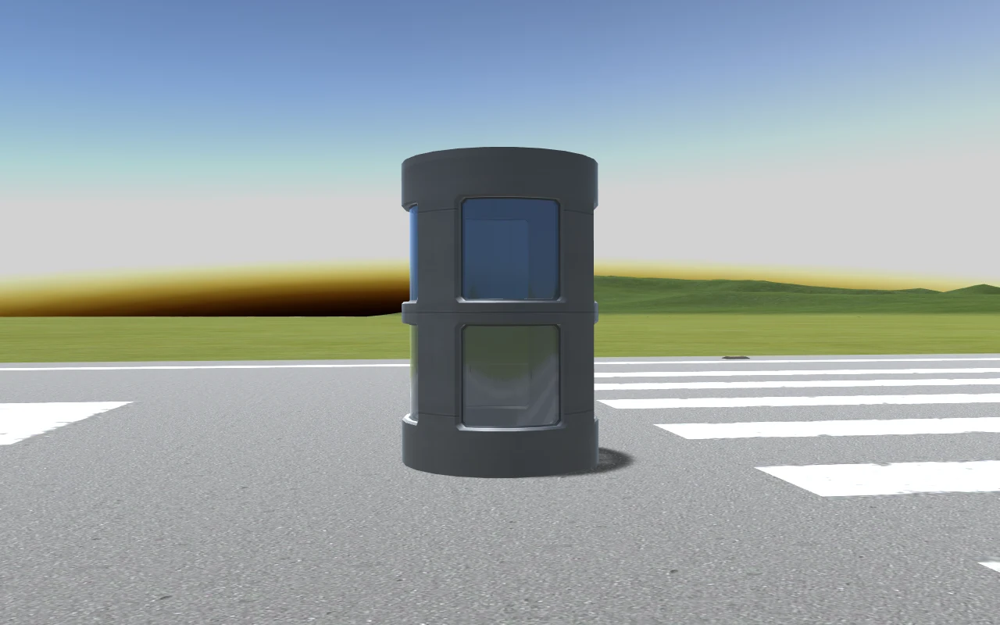
X-Large Structural Viewselage (Half Length)